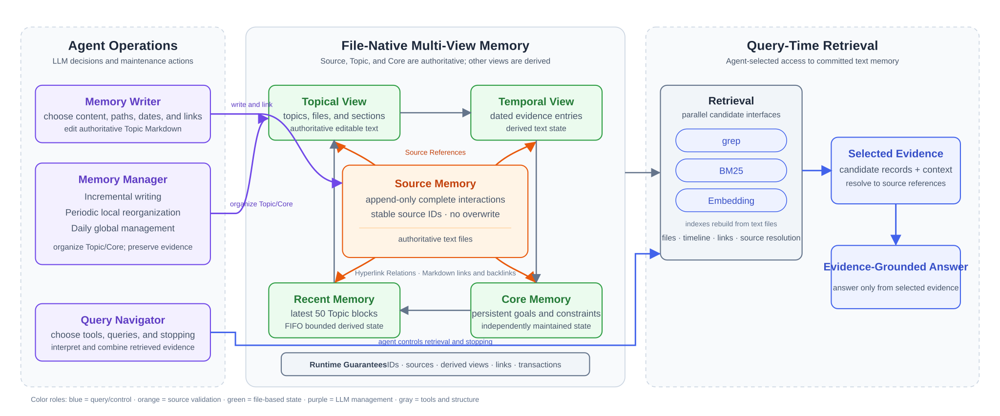

Research Overview
Agent Memory Harness：由 LLM 控制的文件式记忆
LLM-Controlled File-Native Memory
Agent Memory Harness 的核心想法是让 LLM 同时承担记忆组织者和主检索器。记忆保存在可读的 Markdown 文件中；grep、BM25 和 Embedding 是三个并列的检索工具，目录、时间线、链接和原文解析提供结构化访问。Writer、Manager、verification 与查询使用 Claude Agent SDK 运行，LLM 根据问题和每轮检索结果决定下一步。
1. 核心思路
让 LLM 用 wiki 文件夹作为长期记忆，以检索路径为导向组织记忆。
核心创新：存放一条新记忆时，不是问"这条信息属于什么分类"（整理者视角），而是问"你将来需要这条信息时会去哪找"（检索者视角），然后把记忆放在模型回答的那个位置。构建时模拟检索决策，保证放置位置就是模型将来最直觉会去找的位置。
文本文件是权威记忆状态。BM25 与 Embedding 索引都可以从文件重建，只负责返回候选；LLM 自主决定调用 grep、BM25、Embedding 或结构化访问工具，不采用固定前置检索。

2. 要解决的问题
核心挑战：现有方法把记忆管理外包给了独立于 LLM 的外部系统。存储内容由 LLM 抽取但交给向量数据库/图数据库保管，检索由 embedding 模型而非 LLM 执行，优化靠 RL 离线训练或人工规则。记忆系统和 LLM 本身是割裂的——LLM 不知道自己的记忆是怎么存的、怎么组织的、能不能找到。我们的核心主张是把记忆管理的全部环节交还给 LLM 自身——由 LLM 决定存什么、放哪、怎么找、怎么优化。这个核心挑战体现为三个具体问题：
| 问题 | 说明 | 我们的方案（§3） | |
|---|---|---|---|
| 存储 | 存储内容失真 | 几乎所有方法在存储时让 LLM 改写内容——生成摘要、抽取三元组、压缩笔记。改写丢失具体细节，导致检索时信息不完整。Mem0 博客承认旧算法"overwrites sometimes erased key information"；综述指出"LLM-based extraction may omit fine-grained but query-critical details"。 | §3.2 Copy Don't Generate + RSP：保留对话原文不改写，存储位置由模拟检索决定 |
| 检索 | 检索决策与推理解耦 | 固定 top-k 检索会在回答推理完成前决定模型能看到什么，漏掉的证据无法在后续补回。 | §3.3 LLM-controlled retrieval：LLM 在 grep、BM25、Embedding 和结构化访问工具之间持续选择，并根据新证据继续搜索 |
| 优化 | 缺乏检索反馈闭环 | 存储时做一次决策后不再调整（综述称之为 "static RAG-style approach"）。记忆增多后检索质量劣化（Mem0 issue #5330），但没有根据检索效果反馈优化的闭环。HORMA 的 skill evolution 是最接近的尝试，但只做离线 prompt 改进，不修改已有结构。 | §3.4 RFR：检索失败或时间、调用次数、token 成本较高时，LLM 重构本次涉及的局部 Topic |
3. 方法
3.1 问题定义
输入：按时间顺序到达的多轮对话流 D = {d₁, d₂, ..., dₙ}，每轮包含多个发言。
输出：一个可检索的记忆系统 M，能够回答关于历史对话内容的问题。
约束：
- 权威记忆必须是人可读、可编辑的 Markdown 文件
- BM25 与 Embedding 只建立可重建的派生索引，不保存唯一事实
- 不要求向量数据库或图数据库；索引可以由本地组件维护
系统的核心闭环：存储（新对话 → wiki）→ 检索（问题 → 导航 wiki → 回答）→ 优化（检索反馈 → 重组 wiki 结构）。
3.2 记忆存储
记忆存储解决三个问题：用什么结构、放在哪里、存什么内容。
Wiki 结构：一个普通的文件夹，里面放 markdown 文件。LLM 通过工具函数（ls、cat、grep_headings、mkdir、write_file、append_file、find）直接操作。结构从空文件夹自然生长——没有 index 文件，没有预设分类。
| 层级 | 对应 | 示例 | 说明 |
|---|---|---|---|
| 文件夹 | 归组（文件多时） | 腾讯/ 2024Q1/ | 用具体名字（公司/时间/地点），不用抽象分类（"人物/"、"项目/"） |
| 文件 | 具体实体/主题 | 张三.md 数据库迁移.md | 文件名必须是具体名词 |
| 标题 (h2/h3) | 子主题 | ## 工作经历 | 文件内按主题分段 |
| 段落 | 单条记忆 | [2024-03-15] 和张三在上海开会讨论迁移方案 | 带时间戳的原文 |
命名约束：所有文件/文件夹名用具体名词（人名、项目名、地名、公司名），禁止抽象词（"重要"、"工作相关"、"项目"）。文件间关联用 markdown 链接 [text](path.md)。大部分场景下根目录放文件即可，文件夹只在文件数量多到难以浏览时才建。
放置策略——RSP（Retrieval-Simulated Placement）：新信息来了，LLM 模拟检索——"如果将来要找这条信息，我会去 wiki 里哪个位置找？"然后把信息放在模拟检索的落点处。根据当前 wiki 状态，有三种情况：
- Wiki 为空：模拟检索没有任何落点。LLM 根据"期望看到"的结构创建文件（和文件夹），文件名、文件夹名由模拟检索时模型期望看到的名字决定。
- 找到匹配位置：
ls/find查看当前 wiki，模拟检索定位到已有文件的某个标题下。直接追加内容。 - 没有匹配位置：当前 wiki 有内容，但没有适合放这条信息的文件。在最相关的文件夹下新建文件，或在根目录新建。涉及多个主题时在主文件写详情、其他文件加交叉链接。
存储内容——Copy Don't Generate：LLM 只做组织和放置，不改写内容。对话原文直接复制到 wiki 中，保留所有细节（人名、日期、数字、具体措辞）。按 5W1H 框架（Who/What/When/Where/Why/How, Tulving 1972）确保信息完整性。
事实变化：NativeMem 不覆盖旧事实以维护单一 current state。状态发生变化时，旧事件和新事件都按各自时间保存在 Topical View 与 Temporal View 中，并绑定 source references；纠错也记录为完整的前序表达与后续修正。查询时由 LLM 根据问题中的时间范围和事件顺序作答。该设计不同于 Mem0 的 update/delete、Infini Memory 的局部重写、Zep/Graphiti 的 edge invalidation 和 ByteRover 的 UPDATE/UPSERT/MERGE/DELETE。
示例：对话"我昨天和张三在上海开了个会，讨论数据库迁移方案。" → LLM 执行
ls看到张三.md和数据库迁移.md→ 按 RSP 判断"将来找这件事会去张三.md" → 在## 工作章节追加原文 + 交叉链接到数据库迁移.md。
3.3 记忆检索
用户提问时，LLM 是主检索器。它不遵循固定步骤，而是根据当前信息缺口选择工具：
| 工具 | 适用情况 | 作用 |
|---|---|---|
ls / cat | 人物或主题路径明确 | 利用模型自建目录读取结构和上下文 |
grep | 专名、原句、编号或精确短语 | 定位确定的字面证据 |
bm25_search | 需要词法排序候选 | 使用倒排索引返回候选 |
embedding_search | 需要语义相似候选 | 使用 Embedding 索引返回候选 |
timeline | 日期、先后、持续时间和状态变化 | 从时间视图核对事件 |
read_original | 已有 source refs，需要核验 | 受限回读原始轮次和邻近上下文 |
这些工具没有固定顺序。LLM 可以改写 query、组合 grep、BM25 和 Embedding 的结果、跳转到 topic 或 timeline，再回原文核验。三种检索都只提供候选，不自动进入回答器。
| 对标对象 | 检索技术 | 比较位置 |
|---|---|---|
| ByteRover | exact/fuzzy cache、BM25、single LLM、full agentic search 的五级固定路由 | 主要检索策略对标 |
| Infini Memory-H/A | summary + BM25 固定混合检索；Agent-controlled file search | 固定检索与 Agent 检索对标 |
| LightMem | Embedding top-k + semantic reranking | Embedding 检索对标 |
| Semble | BM25 + static Embedding + RRF + 结构重排 | 后续混合检索增强参考 |
3.4 记忆优化（Retrieval-Feedback Reorganization）
Wiki 的结构可以抽象为多层嵌套的容器-项目关系：文件夹包含文件，文件包含标题段，标题段包含具体记忆。每一层的结构都可能出现四类问题：
| 问题类型 | 表现 | 检测信号 | 修复操作 |
|---|---|---|---|
| 名字问题 | 容器/项目的名字不能帮模型判断该不该进入 | 模型在该层做了错误选择（选了不该选的、跳过了该选的） | 重命名 |
| 归属问题 | 项目放在了错误的容器中 | 模型在正确容器中找不到，在错误容器中意外找到 | 移动项目到正确容器 |
| 粒度问题 | 容器太大（项目太多难以选择）或太小（容器太多太碎） | 某容器下频繁选错（太多），或多个容器只有 1-2 个项目（太碎） | 拆分或合并容器 |
| 关联问题 | 相关项目在不同容器中，缺少交叉引用 | 模型从另一条路径检索时找不到，但信息确实存在于其他容器 | 添加交叉引用链接 |
这四类问题在每个层级（文件夹→文件→标题→段落）上是对称的，用同样的检测逻辑和修复操作。检索时记录模型在每一层的选择路径，当检索失败或效率低时，定位到出错的层级和问题类型，由 LLM 用同一套工具函数（ls/cat/write_file/append_file/mkdir）执行修复。
除了结构问题，记忆的内容也需要管理。在 copy don't generate（保留原文不改写）的前提下，有四个内容层面的决策：
| 问题类型 | 描述 | 当前策略 |
|---|---|---|
| 过滤 | 新对话中哪些部分值得保存？用户的个人信息要存，assistant 的通用知识回答（如 yoga 动作列表）不需要存 | 选择性 copy：LLM 判断哪些是用户特有的信息（个人事实、偏好、经历），只 copy 这些 |
| 冲突 | 新信息和已有记忆矛盾时怎么办？如"用户搬家了"，旧地址和新地址冲突 | 追加不覆盖：新信息带时间戳追加到同一位置，保留所有历史版本，检索时由模型根据时间戳判断哪个是最新的 |
| 遗忘 | 记忆规模增长到很大时（千万条），检索效率下降 | 当前不做。未来可能需要基于访问频率或时间衰减的淘汰机制 |
| 抽象 | 从大量具体记忆中总结出模式和偏好（如"用户每周五点外卖"） | 当前不做。未来可在原文基础上生成摘要/模式作为辅助索引，但原文保留作为证据，两层共存 |
结构超参数：粒度优化中涉及的具体数值（每个目录下放多少项、wiki 分几层、单文件最大多少行）不能预设，需要根据 LLM 的实际表现确定：
- 每层项目数：
ls列出太多项模型容易选错，太少则层级太深。最优值取决于模型在该层的选择准确率——通过实验测量不同项目数下的检索正确率，找到拐点 - 层级深度：每多一层多一次 LLM 调用（增加 token 和延迟）。最优深度是选择准确率和调用成本的 tradeoff
- 文件大小：
cat读入过长的文件，模型在长文本中定位答案的准确率会下降。最优大小取决于模型的长文本理解能力
这些超参数因模型而异（强模型能处理更多选项和更长文件），需要在目标模型上实验确定，不同模型的最优结构配置可能不同。
相关工作的论文正文见 Agent Memory: Related Work，完整分类和系统对比见 Agent Memory Survey。
4. 贡献
- 信息保真度是记忆质量的关键瓶颈（实证发现）：实验证明保留对话原文（copy don't generate）比复杂的结构化方案更重要。同一模型下，从 LLM 改写存储切换到原文复制，准确率从 20% 提升到 90%（4.5 倍）。用最简单的文件结构 + 原文复制（LJ=83.5），超过使用时间树+摘要的 TiMem（75.3）、向量+图+三元组的 Mem0（57.9）、以及使用顶级模型的 HORMA（51.6）。这一发现挑战了领域共识——记忆系统的核心不在组织方式的复杂度，而在存储内容的保真度。
- RSP/RFR 记忆管理框架（方法设计）：提出以"模拟检索"为核心原则的文件系统记忆管理方法。RSP（Retrieval-Simulated Placement）在写入时模拟检索确定放置位置——新信息来了，模拟去找它，落点处就是存储位置，落点不存在则创建。RFR（Retrieval-Feedback Reorganization）在检索失败时根据反馈优化结构。两者统一于同一原则：以检索者视角做所有决策。同时定义了文件系统记忆的 8 个管理问题（结构：名字、归属、粒度、关联；内容：过滤、冲突、遗忘、抽象），并指出这些问题在每个层级（文件夹→文件→标题→段落）上是对称的。
- 系统实验验证：在 LoCoMo 和 LongMemEval 上验证方法有效性。包括：per-category 分析（temporal 88.1, single-hop 85.6, multi-hop 61.2）、消融实验（RSP、copy、5W1H 各自贡献）、scaling 实验（模型强弱对检索影响不大，证明低模型依赖）、检索效率分析（67% 的题 4 次调用解决）、以及和 13 个现有方法的对比。
5. 威胁与开放问题
- 评测公平性：当前实验使用 qwen3.6-flash 作为 judge，baseline 数字来自各自论文（使用不同 judge）。严格对比需要统一 judge 模型自跑所有 baseline。
- 规模可扩展性：LoCoMo 的对话量较小（几万 token），wiki 只有 2-8 个文件。LongMemEval（120K token/样本）初步显示模型会建 30+ 文件夹，结构超参数（每层项目数、层级深度、文件大小）的最优值需要进一步实验。
- 检索延迟：连续工具推理仍是秒级。grep、BM25 和 Embedding 由 Agent 自主选择能否在相同工具预算下同时提高准确率和效率，仍需与 ByteRover-style 固定五级路由进行受控实验。
- RFR 验证不足：8 个问题的分类法已定义，但大规模的定向修复实验尚未完成。需要证明按分类法指导的优化确实优于无指导的优化。
6. 文档结构
- Related Work — 论文正文式相关工作
- Survey — Agent Memory 的分类、系统对比、评测与资源
- Method — Agent Memory Harness 的记忆状态、构建、管理、检索与实现边界
- Experiments — Benchmark、实验设置、结果、消融与执行状态
- Results Evidence — 可追溯的结果表与实验产物
- Research Plan — 当前进度、剩余研究任务、依赖关系和执行顺序